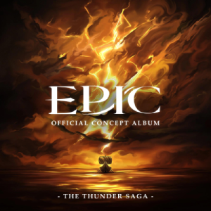

EPIC: The Musical

Aquí me he tomado una pequeña licencia. EPIC es el trabajo de fin de carrera de Jorge Rivera-Herranz. Es una reinterpretación de La Odisea en formato de álbum musical que está dividido en 9 sagas que recorren desde la caída de Troya hasta el regreso a Ítaca. Si tienes tiempo, mira alguna animación que puedes encontrar en línea hecha por sus seguidores de alguna de las canciones.
Canción destacada: The Horse and the Infant
La primera canción del musical, narra el asedio de Troya y el propósito que los dioses le dan a Odiseo, asesinar al hijo de Héctor.
Descripción
Fragmento de The Horse and the Infant, tema de apertura de EPIC: The Musical. Pieza narrativa sobre el asedio de Troya y la encrucijada que los dioses plantean a Odiseo respecto al hijo de Héctor.
Letra
Alright, my brothers, listen closely
Tonight, we make the Trojans pay
Ten years of war, they've killed us slowly
But now we'll be the ones who slay
Think of your wives and your children
Your families wonder where you've been
They're growing old and yet you're still here
Do what I say, and you'll see them again (yes, sir!)
Diomedes will lead the charge
Agamemnon will flank the guards
Menelaus will let our mates
Through the gates to take the whole city at large
Teucer will shoot any ambush attack
And little Ajax will stay back
Nestor, secure Helen and protect her
Neo, avenge your father, kill the brothers of Hector (yes, sir!)
Find that inner strength now (whoo!)
Use that well of pride (whoo!)
Fight through every pain now (whoo!)
Ask yourself inside
What do you live for? What do you try for?
What do you wish for? What do you fight for?
(What do you live for? What do you try for?)
(What do you wish for? What do you fight for?)
Penelope
Penelope
And Telemachus
I fight for us
I fight for us
(What do you live for?) Penelope
(What do you try for?) Telemachus
(What do you wish for?) I'm on my way
(What do you fight for?) Attack!
Who was that?
A vision
Of what is to come, cannot be outrun
Can only be dealt with right here and now
Tell me how
I don't think you're ready
A mission to kill someone's son
A foe who won't run
Unlike anyone you have faced before
Say no more
I know that I'm ready
(I don't think you're ready)
It's just an infant
It's just a boy
What sort of imminent threat does he pose, that I cannot avoid?
This is the son of none other than Troy's very own Prince Hector
Know that he will grow from a boy to an avenger
One fueled with rage as you're consumed by age
If you don't end him now, you'll have no one left to save
You can say goodbye to (Penelope)
You can say goodbye to (Penelope)
I could raise him as my own (he will burn your house and throne)
Or send him far away from home (he'll find you wherever you go)
Make sure his past is never known (the gods will make him know)
I'd rather bleed for ya (he's bringing you)
Down on my knees for ya
I'm begging please (oh, this is the will of the gods)
Please don't make me do this, don't make me do this
The blood on your hands is something you won't lose
All you can choose is whose